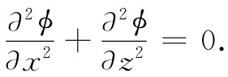

作为最后一个例子，我们想要描述电场的另一个重要特性。它是制造出来应用于电学仪器设计、真空管构造以及其他许多目的的一种特性。这就是带电导线栅附近电场的特性。为了使问题尽可能简单，让我们考虑一个由无限长导线间隔均匀地平行排列在一平面上的阵列。
若我们从在导线平面上方远处俯视电场，则见到一个恒定的电场，正如电荷被均匀地分布在平面上一样。当接近导线栅时，场开始与从远处见到的均匀场有所不同。我们想要估计靠栅多近才能见到势的明显变化。图7-8表示距栅不同距离处等势面的粗略草图。越接近栅，变化就越大。当我们平行于栅运动时，会观察到一种周期性起伏的场。
图7-8 在带电导线构成的均匀栅上面的等势面
现在我们已（由第1卷第50章）知道任何周期性量都可以表示成正弦波之和（傅里叶定理）。让我们来看看能否找到一种满足场方程的适当简谐函数。
如果导线都处在xy平面内，并且平行于y轴排列着，则我们可以试试下列这样的项
其中a为导线间距，而n为简谐数（我们已假定各导线很长，从而不会随着y变化）。一个通解应该由n=1，2，3…这样一些项之和构成。
如果这是一个正确的势，则它应在导线上面的空间（那里没有电荷）内满足拉普拉斯方程，即

用式（7.41）中的ϕ对上式进行尝试，我们得出
我们已找到：如果存在简谐数为n的场的傅里叶分量，则这个 分量将按照特征距离z0 =a/2πn指数式地下降。对于第一谐波（n=1）来说，每当z增大一个栅间隔a时，波幅将下降一个因子e-2π （是一个大的降落），其他的谐波在离开栅时将下降得更快。我们看到，如果仅仅离开栅几个a的距离，场就十分接近于均匀场。也就是说，那些振荡的项都是小项。当然，为了给出在大z处的那个均匀场，就始终应该保留“零级简谐”场
ϕ0 =-E0 z.
对于通解来说，我们应当把这一项与由诸如式（7.41）［其中Fn 由式（7.44）给出］那些项之和组合起来。系数An 应当这样调整，使得整个总和在经过了微分之后，会给出与栅格导线上的电荷密度λ相符合的电场。
我们刚才所发展的方法可以用来说明，为什么采用一个屏栅作为静电屏蔽物往往会与用一块坚实金属板同样优良。除非在与屏栅相距仅几倍于屏栅导线间隔的距离以内，在一闭合屏栅内的电场等于零。我们见到，为什么一个铜屏栅——比铜片既轻又便宜——常被用来保护灵敏的电学设备不受外面干扰电场的影响。
[1] 关于这方面的新近工作和文献摘要可参考Powell C J and Swann J B. Phys. Rev. ，1959，115：869.